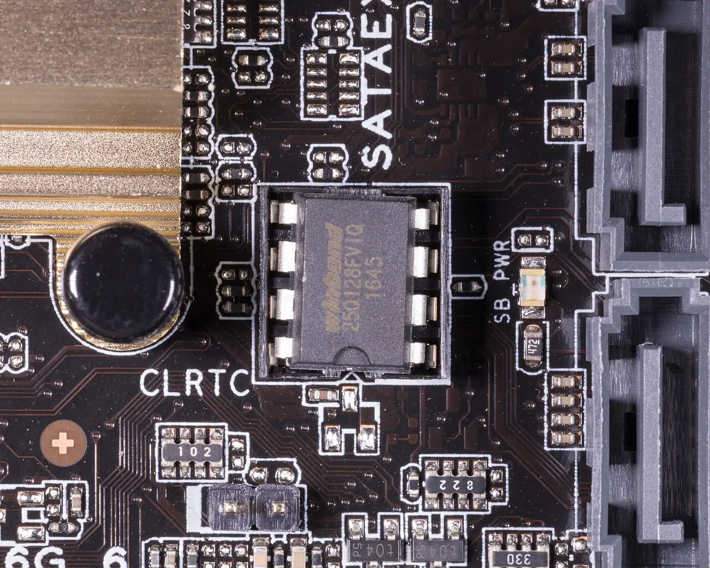
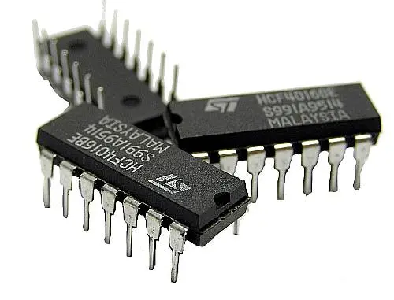
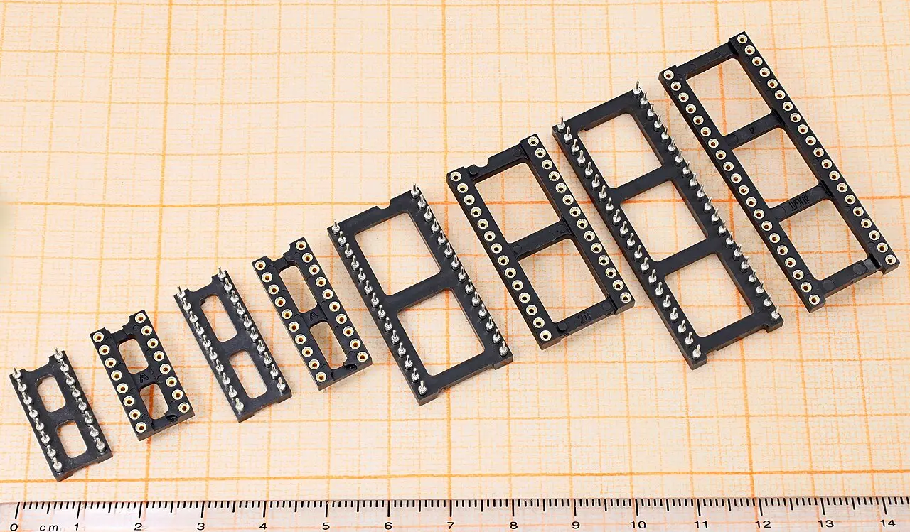
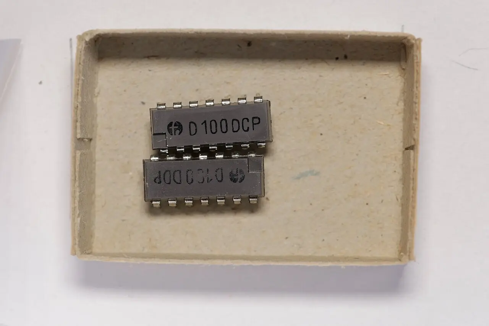

Schema
Validators
Interchangeable validation components for React forms.
Socket-compatible with StandardSchemaV1. Three parts characterised;
two legacy parts retained for repair only.

Fit Zod 4 unless you have a reason not to. It is the only part whose ecosystem — drizzle-zod, tRPC, the Next.js docs, the AI SDKs — covers the whole shared-schema path from DB row to form field [17] [19].
Fit Valibot when the schema is client-bundled and the kilobytes are load-bearing — 1.37 kB vs 17.7 kB for a login form [8]. Fit ArkType when you validate at volume or want TS-syntax schemas — ~4× Zod 4 throughput [20].
The 2026 twist: because Standard Schema v1 is near-universal, picking wrong is cheap at the form-library boundary and expensive at the shared-schema boundary. The form library no longer cares which part you seat. Your ORM, your RPC layer and your OpenAPI generator still do.
Characterised parts
July 2026 · current majors
Three parts. One footprint. Same pinout since Jan 2025.
FIG. 1a — Before the spec, each of these needed its own adapter at every board it touched.@hookform/resolvers still carries 20 of them [14], for the boards that predate the socket.
Rated characteristics
every figure traceable to its citation| Parameter | Sym. | Zod 4 ZOD-4.4.3 | Valibot 1 VLB-1.4.2 | ArkType 2 ARK-2.2.3 | Conditions / note |
|---|---|---|---|---|---|
| Bundle, gzip | Bgz | 17.7 kB [8] Zod Mini: 6.88 kB |
1.37 kB [8] |
~20 kB [20] parser + JIT ship regardless |
Login-form schema, esbuild. Yup ~12 kB; Joi ~145 kB. |
| Tree-shakeable | ηts | ✗ classic method chains; ✓ via zod/mini [7] |
✓ by design [8] | ✗ monolithic runtime | Valibot exports one function per action; nothing you don't import is emitted. |
| Throughput | fval | ~2M ops/s [20] 6.5–14.7× vs Zod 3 [4] |
~4M ops/s [20] |
~8M ops/s [20] |
5-field object. Zod 3 sat at ~300K. On a form, none of this is your bottleneck. |
| TS inference | τinf | Excellent — z.input / z.output split [6] |
Excellent — InferInput / InferOutput [9] |
1:1 with TS syntax [23] | Joi cannot infer values from a schema at all [14]. |
| tsc / editor cost | Ttsc | 4000 ms → 400 ms vs v3 on .extend() chains [4] |
Low — plain generics |
⚠ Highest — type-level parser; big schemas need .scope() [20] |
This is the cost you pay every keystroke, not every request. |
| Error customisation | Ecfg | Unified error param; schema → per-parse → z.config() → locale [5] |
setSpecificMessage / setSchemaMessage / setGlobalMessage [10] |
arktype/config global, .configure() per type — shallow only [13] |
Yup/Joi: per-rule message strings. |
| i18n locales | Nloc | 40+ in zod/locales, z.config(de()) [5] |
✓ @valibot/i18n, modular per-language/per-action [10] |
✗ no locales package docs: "still a topic we're working on" [13] |
Load-bearing: the socket cannot translate for you. See §03. |
| Form coercion | Cstr | z.coerce.*, z.stringbool(), z.preprocess() [6] |
v.pipe(v.string(), v.toNumber()) [29] |
type("string.numeric.parse"), filter / narrow [12] |
Yup coerces implicitly — lossy. |
| JSON Schema out | Jout | z.toJSONSchema() [4] |
@valibot/to-json-schema |
✓ bidirectional [11] | Spec v1.1 standardises this pin; Joi 18 already ships it [22]. |
Socket specification
StandardSchemaV1 · ~60 lines of TypeScript
Standard Schema v1.1.0
A schema exposes a ~standard property. A consumer calls schema["~standard"].validate(input) and gets back { value } or { issues } [16]. That is the whole interface.
~standard.validate(input)
Sync or async. Returns { value } on success, { issues } on failure. This one pin is why any form library can accept any of the five parts.
Issue.message Issue.path
The entire error surface.
Issue.code Issue.params
Not connected — and this is the consequence nobody talks about. The spec's issue type is { message: string; path?: … }: no error code, no params [2]. A Standard-Schema-consuming form library therefore cannot re-word or translate your errors. i18n must happen inside the part. That is what makes ArkType's missing locales package a real cost, not a footnote.
Compatible host boards
what accepts the socket, what is soldered to ZodTanStack Form ⭐ 6.6k
Native socketPass the schema straight into validators.onChange. Zod, Valibot, ArkType, Effect/Schema — all adapter-free [15].
next-safe-action ⭐ 3k
Native socketStandard Schema at the protocol level — .inputSchema() takes any compliant schema. You can mix Zod and Valibot across actions in one project [16].
Next.js docs
Soldered to ZodStill hard-codes Zod (safeParse + flatten().fieldErrors + useActionState) — and the 16.2 sample still uses the removed v3 invalid_type_error option [17].
tRPC 11 · Hono · oRPC · Drizzle
MixedStandard Schema or per-library packages. ArkType ships drizzle-arktype and @hono/arktype-validator [11]. Coverage outside Zod is real but thinner — see the field report below.
A practitioner migrated two forms to Valibot: ~18 kB gzip and ~140 ms LCP saved. Then stopped — because drizzle-valibot lagged drizzle-zod on a nullable JSONB column, and the schema was shared with the DB [19].
At the form-library boundary the choice is free. At the ORM / RPC / codegen boundary it is not. Standard Schema makes the form library indifferent; it does nothing to make drizzle-zod, zod-openapi or an AI SDK's tool schemas indifferent.
Application note — strings in, typed data out
where most 2026 form bugs liveEvery <input> yields a string. Every part therefore has an input type ≠ output type problem. The three handle it in three different ways, and one of them has a trap in the obvious move.
// schema.ts — no 'use server', no 'use client' export const signup = z.object({ email: z.email(), age: z.coerce.number().min(18), }); // action.ts 'use server'; export async function signupAction(_prev, fd) { const r = signup.safeParse(Object.fromEntries(fd)); if (!r.success) return { errors: z.flattenError(r.error).fieldErrors }; // r.data is typed z.output<typeof signup> }
z.flattenError() / z.treeifyError() replace v3's .flatten() / .format(); flattenError yields { formErrors, fieldErrors } — exactly the shape useActionState hands back to the client [33]. ⚠ The whole schema module lands in the client bundle: keep DB imports out of it.const schema = z.object({ age: z.coerce.number().min(18) }); // RHF holds z.input, hands you z.output in onSubmit useForm< z.input<typeof schema>, unknown, z.output<typeof schema> >({ resolver: standardSchemaResolver(schema), });
z.string().transform(Number).pipe(z.number())z.coerce.number() is the obvious move and the wrong one for forms: its input type is unknown [6], which erases the compile-time contract with your form state. Prefer the transform+pipe above, or z.preprocess.v.pipe(v.string(), v.toNumber(), v.minValue(18))type("string.numeric.parse")filter / narrow split — validate before vs after the morph [12]. A filter rejects a 10 MB string before you parse it; a narrow checks the resulting number. The cleanest model of the three.TanStack Form drops transformed values
Its validators do not hand back transformed output [15]. The schema validates; you re-parse in onSubmit if you want the coerced value. Budget for that.
Conform inverts the contract
parseWithZod introspects the schema and injects coercion + empty-string stripping, so a plain z.number() works against raw FormData [18]. The only one that makes FormData first-class.
ArkType's RHF resolver is firstError-only
Use the generic standardSchemaResolver instead if you need all-error mode [14].
i18n cannot live downstream of the socket
The Standard Schema Issue carries only message + path [2]. A form library below the spec has nothing left to translate with. Do i18n inside the part, whichever part you seat.
Legacy inventory
Yup 1.7.1 · Joi 18.2.3
for new designs
Both now speak the socket. Neither is a starting choice.
Yup 1.7.1 [27] ⭐ 23.7k and Joi 18.2.3 [28] ⭐ 21.2k both implement Standard Schema [21] [22]. That means an existing Yup or Joi codebase can adopt TanStack Form or next-safe-action without rewriting a single schema. Keep them if you have them; don't start with them.
YUP-1.7.1 ~10.1M/wk
- ~12 kB, not tree-shakeable
- Runtime ≈ Zod 3 tier
- Coerces implicitly — lossy
- Inference: ✓
Joi's missing inference breaks the "typed data out" half of the contract outright — the part fits the socket, but the board downstream gets any.
Ordering information
pick the part that survives contact with your server stackedge, mobile web, embeddable widget
Issue carries only message + path [2] — a form library downstream of the spec has nothing left to translate with. Or split deliberately (Valibot client / Zod server) and accept translating at the boundary.